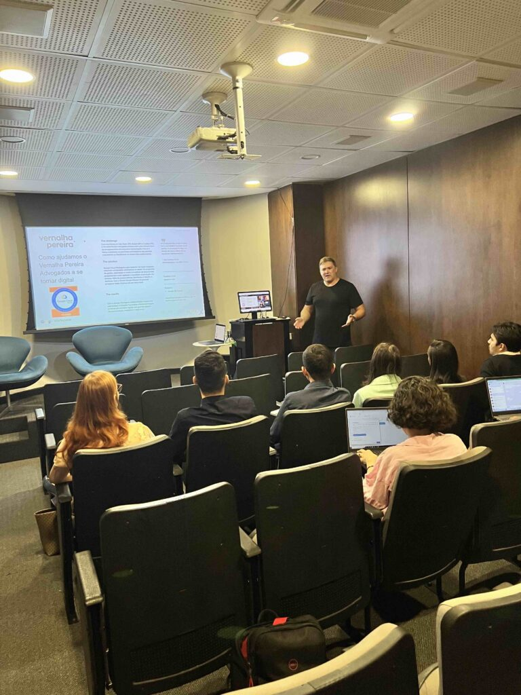

Vivemos em uma era em que todas as empresas, independentemente do setor, se tornaram, de certa forma, empresas de tecnologia. A transformação digital é inevitável, e a adaptação a esse cenário é crucial para o sucesso nos negócios. Contar com um parceiro tecnológico contínuo é mais do que uma escolha estratégica; é uma necessidade para enfrentar os desafios contemporâneos.
▫️Infraestrutura
A infraestrutura tecnológica é a espinha dorsal de qualquer operação empresarial moderna. Manter servidores, redes e sistemas operacionais atualizados exige conhecimento especializado. Ter um parceiro tecnológico como a Guinux dedicado a essa tarefa permite que as empresas foquem em suas competências principais, enquanto garantem que sua base tecnológica esteja sempre robusta e eficiente.
▫️Produtividade

Além disso, a produtividade é impulsionada por soluções tecnológicas avançadas. Ferramentas colaborativas como o Google Workspace e automação de processos são elementos-chave para otimizar operações. Um parceiro tecnológico capacitado e já testado pelo mercado pode implementar e manter essas soluções, garantindo que as equipes tenham as ferramentas necessárias para serem ágeis e eficazes.
▫️Segurança
Ciberameaças evoluem constantemente, e proteger dados sensíveis é uma prioridade. Um parceiro como a Guinux implementa medidas proativas de segurança, realiza auditorias regulares e garante que as defesas estejam sempre atualizadas contra ameaças emergentes.
▫️Parceria Tecnológica Contínua
Contar com um parceiro tecnológico, não é apenas uma escolha estratégica inteligente, mas uma necessidade para manter a competitividade. Ao externalizar a gestão tecnológica, as empresas podem se concentrar em inovação, crescimento e na entrega de valor aos clientes, enquanto mantêm uma base tecnológica sólida e segura.
Se você quer saber como podemos apoiar o seu negócio através da nossa parceria tecnológica acesse www.guinux.com.br